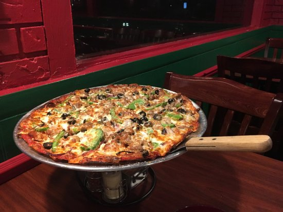

Pizza Tracking
Media Page
Pizza Likes
Brick Oven Pizza : 0
Calzone Pizza : 0
Chicago Pizza : 0
Oven Grinder Pizza : 0
Thin Crust Pizza : 0
New York Style : 0
Detroit Style Pizza : 0
Shot Gun Dans Pizza : 0
Pizza Pictures!

What ZA is your Favorite?
Vote Five Times!